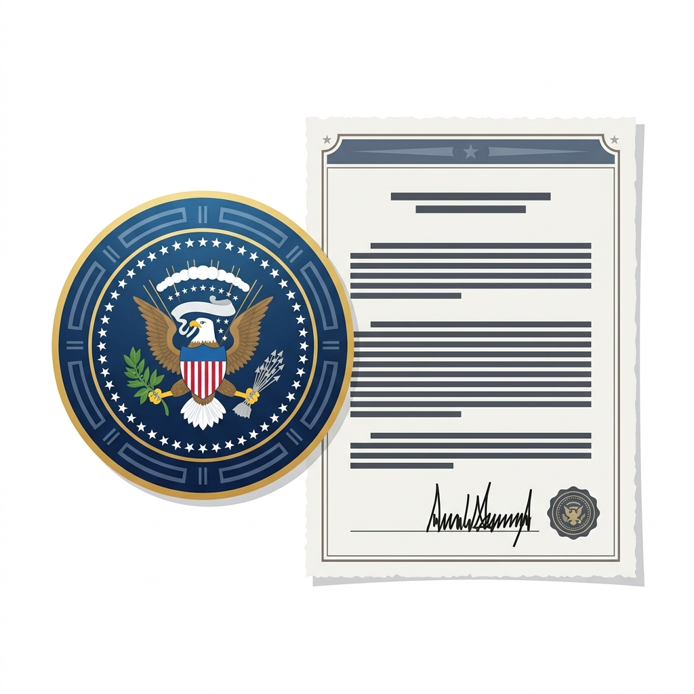

Vardaan Learning Institute
ICSE Class 10 Civics • Chapter Notes
🌐 vardaanlearning.com📞 9508841336Team Vardaan ❤️
Chapter 2: The Union Executive - The President

The Union Executive consists of the President, the Vice-President, the Prime Minister, and the Council of Ministers. The President of India is the Head of the State and the nominal (titular) executive, while the Prime Minister is the real executive head.
1. Qualifications for the Office of President
- Must be a citizen of India.
- Must have completed 35 years of age.
- Must be qualified for election as a member of the Lok Sabha.
- Must not hold any office of profit under the Government of India, State Government, or any local authority.
2. Election of the President
The President is elected indirectly by an Electoral College. This ensures that the President represents the whole nation and not just one political party.
Composition
The Electoral College consists of:
- The elected members of both Houses of Parliament (Lok Sabha and Rajya Sabha).
- The elected members of the Legislative Assemblies of the States (including Delhi and Puducherry).
Note: Nominated members of Parliament and State Assemblies do not participate in the President's election.
Term of Office and Removal
- Term: The President holds office for a term of 5 years.
- Impeachment: The President can be removed from office before the expiry of the term only by a process of impeachment for 'violation of the Constitution'. The impeachment resolution must be passed by a 2/3rd majority of the total membership of both Houses of Parliament.
3. Powers of the President
Although the President is bound to act on the advice of the Prime Minister and the Council of Ministers, the powers vested in the office are vast.
Executive Powers
- All executive actions of the Government of India are taken in the name of the President.
- Appointments: Appoints the Prime Minister, other Ministers (on the PM's advice), the Chief Justice and Judges of the Supreme Court and High Courts, the Attorney General, the Comptroller and Auditor General, Governors of States, and Ambassadors.
- Military Powers: The President is the Supreme Commander of the Armed Forces. He/She has the power to declare war and conclude peace (subject to parliamentary approval).
Legislative Powers
- Summons and prorogues the Parliament and can dissolve the Lok Sabha.
- Addresses the first session of Parliament after general elections and the first session of each year.
- Assent to Bills: No bill can become a law without the President's assent. The President can return a non-money bill for reconsideration, but if passed again, assent must be given.
- Ordinance Making Power: When Parliament is not in session, the President can issue ordinances. An ordinance has the same force as an Act of Parliament but must be approved by Parliament within 6 weeks of its reassembly.
Financial Powers
- A Money Bill can be introduced in the Lok Sabha only with the prior recommendation of the President.
- The Annual Financial Statement (Union Budget) is laid before Parliament on behalf of the President.
- Controls the Contingency Fund of India to meet unforeseen expenditure.
Judicial Powers
- Pardoning Power: The President has the power to grant pardons, reprieves, respites, or remissions of punishment, or to suspend, remit, or commute the sentence of any person convicted of any offense (especially death sentences and sentences by Court Martial).
Discretionary Powers
Discretion
While the President normally acts on the advice of the Council of Ministers, there are situations where discretion can be used:
- Appointment of the PM: When no single party gets a clear majority in the Lok Sabha (a hung parliament), the President uses discretion to appoint a leader who can prove a majority.
- Dismissal of Ministers: If the Council of Ministers loses the confidence of the Lok Sabha but refuses to resign, the President can dismiss it.
- Suspensive Veto: Returning a bill (other than a Money Bill) for reconsideration.
4. Emergency Powers of the President
The President can declare three types of emergencies in extraordinary situations:
National
1. National Emergency (Article 352):
Declared when the security of India or a part of it is threatened by war, external aggression, or armed rebellion.
State
2. State Emergency / President's Rule (Article 356):
Declared when there is a breakdown of constitutional machinery in a State (e.g., if no party forms a government, or the state disobeys central directives). The state government is dismissed, and the President takes over the state's administration through the Governor.
Financial
3. Financial Emergency (Article 360):
Declared when the financial stability or credit of India is threatened. During this, salaries of government officials (including Supreme Court judges) can be reduced.